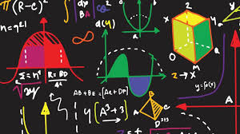
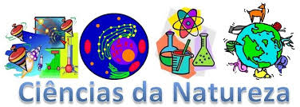

Educação digital – WEB DEV – Web Developer:
Web Dev ou Web Developer significa desenvolvedor de sistemas, é um termo usado para descrever o desenvolvimento de websites da internet. Toda a linguagem de programação será aprendida no decorrer desse ano letivo dentro da disciplina do Via-e que englobará a educação difital (digital house)
Todo site tem que ter um conteúdo, sendo assim cada ano de ensino terá o seu conteúdo, que cada aluno colocará em seu site. O conteúdo do primeiro ano a ser colocado no site será referente ao projeto de vida que será desenvolvido no Via-e.
Projeto trilhar e a BNCC.
O projeto trilhar é um projeto que visa levar maior conhecimentos sobre as áreas de atuação e estudo do ensino médio na BNCC.
A Base Nacional Comum Curricular (BNCC) é um documento que regulamenta quais são as aprendizagens essenciais a serem trabalhadas nas escolas brasileiras públicas e particulares de Educação Infantil, Ensino Fundamental e Ensino Médio para garantir o direito à aprendizagem e o desenvolvimento pleno de todos os estudantes. Por isso, é um documento importante para a promoção da igualdade no sistema educacional, colaborando para a formação integral e para a construção de uma sociedade mais justa, democrática e inclusiva.
Áreas do conhecimento:
Linguagens
O foco da área de Linguagens e suas Tecnologias está na ampliação da autonomia, do protagonismo e da autoria nas práticas de diferentes linguagens; na identificação e na crítica aos diferentes usos das linguagens, explicitando seu poder no estabelecimento de relações; na apreciação e na participação em diversas manifestações artísticas e culturais; e no uso criativo das diversas mídias.
Matemática
Na área de Matemática e suas Tecnologias, os estudantes devem consolidar os conhecimentos desenvolvidos na etapa anterior e agregar novos, ampliando o leque de recursos para resolver problemas mais complexos, que exijam maior reflexão e abstração. Também devem construir uma visão mais integrada da Matemática, da Matemática com outras áreas do conhecimento e da aplicação da Matemática à realidade.
Ciencias da Natureza
No Ensino Médio, a área de Ciências da Natureza e suas Tecnologias trata a investigação como forma de engajamento dos estudantes na aprendizagem de processos, práticas e procedimentos científicos e tecnológicos, utilizando modelos e fazendo previsões. Dessa maneira, possibilita aos estudantes ampliar sua compreensão sobre a vida, o nosso planeta e o universo, bem como sua capacidade de refletir, argumentar, propor soluções e enfrentar desafios pessoais e coletivos, locais e globais
Ciencias Humanas e Sociais
No Ensino Médio a área de Ciências Humanas e Sociais Aplicadas propõe o aprofundamento e a ampliação da base conceitual e dos modos de construção da argumentação e sistematização do raciocínio. Nessa etapa, como os estudantes e suas experiências como jovens cidadãos representam o foco do aprendizado, deve-se estimular uma leitura de mundo sustentada em uma visão crítica e contextualizada da realidade, no domínio conceitual e na elaboração e aplicação de interpretações sobre as relações.
Sistema de Avaliação
O sistema de avaliação será dividido em duas partes: A primeira parte que entrará como nota pedagógica será a atividade referente ao projeto de vida, assim seguindo os critérios de avaliação institucional terá peso de 5 pontos. A segunda parte que entrará como nota Diversificada será referente ao projeto trilhar, que seguirá os critérios de avaliação institucional e terá peso 10 pontos. Ainda a nota Atitudinal seguirá os critérios padrões e valerá para os dois projetos.